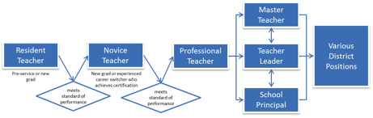

- The RESPECT Project Vision Statement
- Section IX—Appendix: Sample Teacher Role Structure
Section IX—Appendix: Sample Teacher Role Structure
Section IX—Appendix: Sample Teacher Role Structure
There are a numerous structures that might offer teachers meaningful career lattices that could support excellent teaching and leadership. Ultimately, it will be up to schools and districts to work with teachers to develop these arrangements and determine the right mix of roles and responsibilities that will work for them and for their students. Here we offer one example.

A. Entering the Field: The Resident Teacher
The Resident teacher is a beginner who, still in (or perhaps fresh out of) a teacher preparation program, engages in a highly supported teaching practicum or residency. Unlike current student teaching experiences, Residents would be paid for their work (perhaps $20,000). Paired with a Master teacher who has content-area expertise and provides support, feedback and coaching, Residents are not yet teachers of record. Rather, under the Master teacher's supervision and tutelage, they continually reflect on and develop more fully their skills, including preparing effective lessons, analyzing data, communicating with parents, and managing classrooms.
Most teachers, though not all, will experience a residency program for one year and only move on to be certified as Novice teachers after meeting a bar of minimal proficiency set for entering the profession. Some teachers, unable to achieve this goal at the end of a second year, will not be granted entry.
B. Developing Greater Effectiveness: The Novice Teacher
The Novice teacher is a certified educator who is ready to take on the challenges and joys of running a class independently as teacher of record, but who is still developing into an effective instructor. Novice teachers demonstrate that they have learned essential teaching skills that allow them to effectively instruct and monitor the progress of students, but their development is still monitored, nurtured, and evaluated, and progress proceeds in a planned and intentional way. School leaders encourage their growth and development by pairing them not only with a quality Master teacher from the same content area, but also by engaging them with a variety of energetic and experienced colleagues. These collegial interactions expand the Novice teachers' perspective and include them as important contributors to school life. Successful school leaders will continually watch for the Novice teachers' areas of passion and interest and encourage them.
Teachers in the Novice role are considered pre-tenure instructors, but unlike pre-tenure colleagues from the old system, who were instructed to "keep quiet until tenure," Novice teachers will be consciously and systematically encouraged to contribute to the larger school community. Novice teachers may earn salaries akin to today's beginning teachers—between $35,000 and $50,000 per year for their service—and they will spend 2-5 years honing their skills before being promoted to Professional teacher, a title earned by demonstrating sustained effectiveness—perhaps after receiving two years of effective ratings in a row. Tenure may also be conferred at this point in a teacher's career. Those Novice teachers who do not meet this high bar will not continue in the profession.
C. Earning the Full Respect and Responsibility of the Profession: The Professional Teacher
Professional teachers are tenured professionals who focus the majority of their energy on teaching and learning. Such teachers thrive in a classroom where creative, collaborative and engaged instruction is the norm. Professional teachers are exemplary life-long learners whose fascination with academic content is paired with their ability to use data to promote academic growth. They are reflective practitioners who are informed by the ongoing, professional feedback of peers and students. Unlike solo fliers, Professional teachers actively seek to involve school leaders, colleagues, parents, students, and community partners as important sources of information and expertise. The Professional teacher is also a tireless academic advocate and coach who manages the myriad resources in the school and community to support student success.
Professional teachers receive an immediate and significant salary increase when they are promoted from Novice status, having demonstrated their effectiveness with students. Salaries for Professional Teachers might range from $65,000 to $120,000, depending on teachers' skills and continued effectiveness over time. Professional teachers may remain in this role for their entire careers, assuming that they continue to demonstrate effectiveness through their evaluations, or they may choose to advance into leadership roles.
D. Developing Teachers and Students: The Master Teacher
A Master teacher is a classroom-based, exemplary educator who models effective teaching practices for Resident and Novice teachers and who serves as a teaching resource for the entire professional team. As highly effective educators and life-long learners who use research-based techniques, the Master teacher is a "teacher of adults," one who possesses the skills and disposition to support and inspire colleagues, as well as the ability to offer constructive feedback and evaluation of Novice teachers and Residents. Master teachers are key members of a school's leadership team; they focus on cultivating and supporting a culture of reflection and continuous improvement.
Master teachers could remain in the classroom on a part-time basis (e.g., 3-4 teaching hours/day) to allow them the remaining time to support colleagues appropriately. Master teachers are likely to have spent five or more years in the classroom and to have been rated as highly effective for at least three. Master teachers may remain in the role as long as they are highly effective for at least three out of every five years of continued practice. Master teachers, in short, are exemplary teachers of students and of their colleagues who, if desired, might make excellent principals in the future. Salaries for Master teachers may range between $80,000 and $150,000.
E. Sharing School Leadership: The Teacher Leader
Like Master teachers, Teacher Leaders function in hybrid roles that sometimes have them teaching classes to students and at other times have them working with the principal or leadership team on any number of school-based initiatives. For example, a Teacher Leader might share distributed leadership with the principal, direct a site-based research project, develop communities of practice, or design a peer evaluation and review system.
Whatever the unique job description, Teacher Leaders are crucial members of a school or district leadership team, and are personally and professionally responsible for a school's success. Teacher Leaders model the most important professional practices and habits of mind, including the school's core values. To this end, they lead school teams to examine the impact of teaching practice on student growth, and they are experts at working with adults to build a culture of learning and continuous improvement. Teacher Leaders are not selected because they are popular with other teachers or administrators. To be eligible to become a Teacher Leader, teachers may, for example, have spent at least five years in the classroom and have demonstrated that they are effective classroom teachers for at least three consecutive years. Teacher Leaders may remain in the classroom on a part-time basis and may earn between $80,000 and $150,000. As with Master teachers, with further development Teacher Leaders could become effective principals.
- Section I—Introduction
- Section II—A New Vision of Teaching And Leading, and a Reorganized Classroom
- Section III—A New School Day and School Year
- Section IV—An Environment of Shared Responsibility among Teachers and Principals: Strong Principals and Distributed Leadership
- Section V—Entering the Profession
- Section VI—Career Pathways and Professional Advancement
- Section VII—Teacher Evaluation and Development
- Section VIII—Compensation and Conclusion
- Section IX—Appendix: Sample Teacher Role Structure
How Do I Find...?
Information About...
Table of contents
- Section I—Introduction
- Section II—A New Vision of Teaching And Leading, and a Reorganized Classroom
- Section III—A New School Day and School Year
- Section IV—An Environment of Shared Responsibility among Teachers and Principals: Strong Principals and Distributed Leadership
- Section V—Entering the Profession
- Section VI—Career Pathways and Professional Advancement
- Section VII—Teacher Evaluation and Development
- Section VIII—Compensation and Conclusion
- Section IX—Appendix: Sample Teacher Role Structure
Comments
While I believe this proposal
While I believe this proposal has many good ideas, it does feel rather idealistic in approach.
This sort of broad change to the make-up of the education system would be met with a high level of resistance from both the general public and from many teachers. The public is already under the impression that teachers are paid too much, have summers off, and take part in an "easy" job. While most teachers would argue with that point (for good reason), this seems to be the general impression that the public as a whole has.
When a plan like this is proposed the first thing the public will attack is the pay scale. A higher pay scale with strict requirements for professionalism and standards will weed out lesser teachers and attract better teachers, but that isn't how the public will see it. They'll see it as teachers demanding more money for doing the same amount of work (with 3 months off in the summer).
The biggest obstacle for a plan like this, or any kind of similar reform, would be to change the public mindset. Get the average person or parent to see teaching as a "profession" and not just another run of the mill job. It's all Public Relations. If the public saw teachers as essential and important part of society then the public would probably be more open to such a broad plan.
We would also have to redo the way money is allocated within the country as a whole for education. Instead of tying school budgets to local budgets (suburbs vs urban), we would have to allocate money equally among all schools in the country. This by itself would cause an uproar amongst tax payers and would be a major political hot potato. Such redistribution of school funds would have to take place in order to accommodate increased pay.
To conclude, while I do think this approach has merit I also believe that there would have to be a major change in public perception about the role of teachers and schools in the community in order to make it happen. Until the public views teachers and teaching as an important part of society and sees them as "professionals" I do believe that any sort of proposal of this nature will be met with intense resistance and political hostilities. We only need to look at such recent teacher battle states such as Wisconsin to see the intense negative public perception of teachers in the community. Until the general public want change to happen the current model of education will continue to limp along.
This sounds great. Especially
This sounds great. Especially on the pay scale. Unfortunately, I am unsure if that bit would work. I know that in my area there are many tenured teachers making less than the proposed amount for novice teachers.
The Good Force be with
The Good Force be with you!
Your presentation is clearly understood and it summarizes how teachers functions as an educator and how teachers get their rewards.
Live forever and prosper!
This is not a career
This is not a career ladder.
This is simply putting labels on a dead end job.
Who decides what moves a teacher into another label? Looks like an opportunity for a lot of politics which we can certainly do without.
Who wants their children taught be some lower level of a teacher?
Currently, at least in my experience in CA, a teacher is only able to become a head of the ed tech dept, or assistant curriculum superintendent, or some of these other management level jobs ONLY if they acquire an administrative credential which requires some time as a Principal for the different levels of the admin credential. There is a great deal of talent that does not want to become a Principal but for whom one of these other management positions would be a great fit. Often, this talent has other graduate degrees that would make them good candidates.
Think about a police officer. Do they have different levels of being a police officer? Somewhat as they have Lt., Sgt., Captn. and the like but there is no lack of expertise communicated in those titles, but usually rather, years of experience and additional training and specialization. Something more along these lines should be considered.
Once the flipped classroom becomes the norm along with much greater leverage of computerized teaching and data collection, the teacher will truly become the coach and mentor to the students that we are meant to be.
Melissa V Rentchler, MLISc, M.Ed., Certificated CA Teacher Librarian
I would have hoped that a
I would have hoped that a report, such as this one, had been edited for accuracy before publication.
There are several errors that should not be present in a paper of this import.